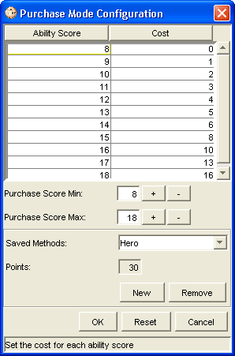

The Purchase Mode Configuration option will open up the Purchase Mode Configuration Window.
This window allows the user to select the specific minimum and maximum ability scores to purchase as well as the ability to alter the point cost for each ability score. Using the ‘+’ or ‘-’ button the user can change the minimum or maximum purchase score allowed by their GM.
The Ability Score column is where the stat value is defined.
The Cost column is where you would enter your numerical value for the stat.
The Purchase Score Min +/- buttons will add a lower value or remove the lowest value in the Ability Score column.
The Purchase Score Max +/- buttons will add a higher value or remove the highest value in the Ability Score column.
The Saved Methods drop down box will display any saves purchase modes created.
The Points window will display the points to spend as defined using the New button window.
The New button will open a window asking for the Name of the new Purchase Method and how many Points the Purchase Method gets.
The Remove button will delete any saved Purchase Mode currently highlighted in the Saved Methods drop down list.
The OK button will accept the current Purchase Mode selected and show the points available to assign to your character.
The Reset button will erase any of the current information, returning the configuration window to no information.
The Cancel button will exit the Configuration Window